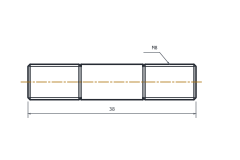
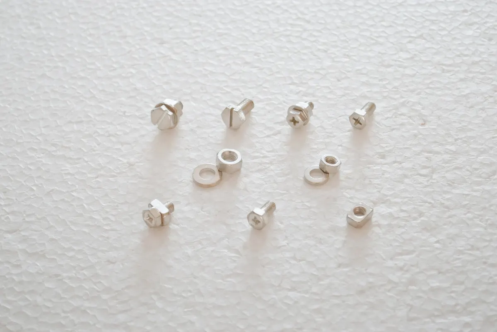
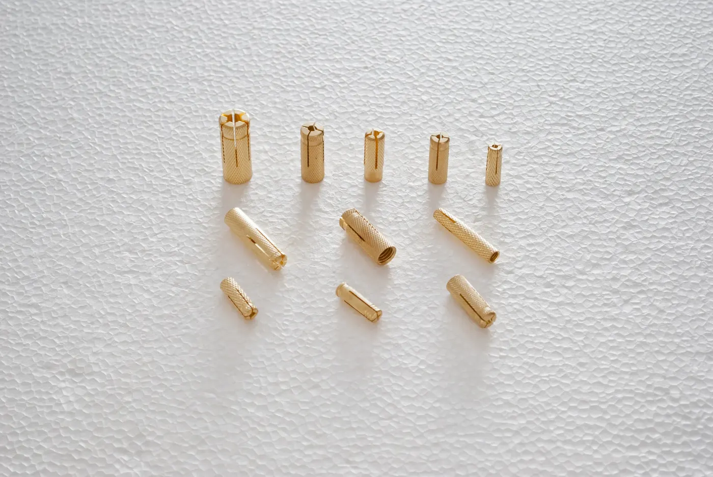
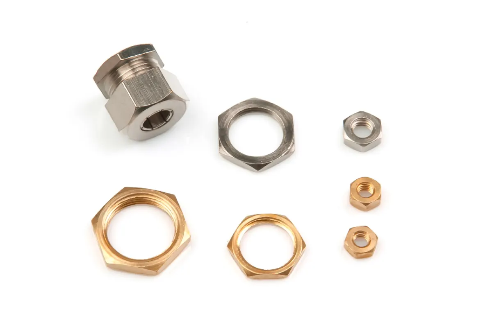
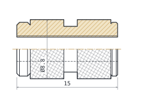

Special brass fasteners
Fasteners that standard catalogues don't cover, made to your drawing: battery-terminal fasteners, screws and bolts, anchors, studs, nuts and washers.

- Process
- Turned and threaded in-house; washers stamped
- Size range
- Within the turning range Ø5–100 mm
- Tolerance
- ±0.05 mm
- Threads
- M · UNC/UNF · BA · BSW · special threads to drawing
- Heads
- Countersunk, pan, cheese, round, hex, square; slotted or other drives to drawing
- Material
- Brass CW614N; others on request
- Finish
- Natural, or plated in our plant: nickel, tin or zinc; silver or chrome on request
- Documents
- EN 10204 3.1 mill certificate, certificate of conformity and final inspection report with every batch; PPAP Level 3 on request · Quality
- Volumes
- From a few thousand pieces to millions a year
Fasteners we make
Made to your drawing or sample.
- Automotive battery-terminal fasteners and kits
- Machine screws
- Hex bolts
- Brass anchors
- Studs
- Nuts
- Washers
Examples



Buying special fasteners from AirGrip
Do you make battery-terminal kits?
Yes: battery-terminal fasteners in brass, to your drawing, packed as kits if required.
Do you make standard screws and bolts?
Yes, in brass, to your drawing or sample, with the head and drive you need. For off-the-shelf sizes a catalogue supplier is usually cheaper.
Lead times, MOQ, NDA and delivery terms: Ordering & shipping.
Related




Send your fastener drawing or sample
Include the thread, plating and, for kits, the parts per kit.